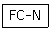
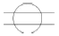
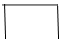
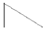

침투비파괴검사산업기사(구) (2011-10-02 기출문제)
1과목: 침투탐상시험원리
1. 침투탐상시험의 침투시간에 대한 설명으로 옳지 않은 것은?
- 미세한 결함을 탐상하기 위해서는 침투시간을 다소길게 적용한다.
- 저온에서 검사하는 경우에는 침투시간을 다소 길게 적용한다.
- 후유화성 침투제를 사용하는 경우에는 침투시간을 다소 길게 적용한다.
- 일반적으로 단조품을 검사하는 경우에는 침투시간을 다소 길게 적용한다.
(정답률: 알수없음)

2. 침투액 적용방법 중 가장 안정적인 정용방법으로, 균일하게 도포할 수 있고 과잉 분무가 되지 않으며, 불필요하게 흘러내리는 침투액이 없어 침투액의 손실을 최소화할 수 있는 방법은?
- 분무법
- 붓칠법
- 정전분사법
- 침지법
(정답률: 알수없음)
3. 후유화성 침투탐상법에서 미세한 결함을 검출하려면 유화시간이 적정해야 한다. 그 주된 이유는?
- 유화제가 적색으로 될 때까지 기다려 세척성이 좋게하기 위함이다.
- 유화제가 표면의 침투액과 충분히 방응하여 수세척이 잘 되게 하기 위함이다.
- 유화제가 결함내부의 침투액과 충분히 반응하여 수세척이 잘 되게 하기 위함이다.
- 유화제가 표면의 침투액은 물론 결함부의 침투액과 충분히 반응하여 수세척이 잘 되게 하기 위함이다.
(정답률: 알수없음)
4. 다음 중 형광 침투탐상검사에만 사용되는 장비는?
- 분광기
- 형광기
- U.V meter
- 농도기
(정답률: 알수없음)
5. 침투탐상시험 방법 및 결함 지시모양의 등급분류(KS B0816)에서 정한 침투처리의 표준 적용온도는?
- 16~32℃
- 15~50℃
- 15~40℃
- 16~52℃
(정답률: 알수없음)
6. 다음 중 침투탐상시험법으로 검사가 어려운 부품은?
- 철 주조품
- 알루미늄 단조품
- 다공성 부품
- 용접 부품
(정답률: 알수없음)
7. 와전루가 얼마만큼 깊게 내부를 흐르는가를 측정하는데에 침투깊이라는 양이 사용된다. 그 밀도가 표면값의 얼마로 저하되는 곳의 깊이를 표준침투깊이(standerd depth penetrati -on)라고 하는가?
- 약25%
- 약30%
- 약37%
- 약45%
(정답률: 알수없음)
8. 누설검사법 중 대형 용기나 저장조 검사에 이용되지만 누설위치의 측정에는 적합하지 않은 검사법은?
- 기포누설시험
- 헬륨누설시험
- 할로겐누설시험
- 압력변화누설시험
(정답률: 알수없음)
9. 여러 종류의 비파괴검사의 특이성에 대한 기술이다. 다음중 틀린 것은?
- 자분탐상검사는 시험체를 자화시켜 Cu,Al 등 표면 및 표면직하의 결함을 검출하는 방법이다.
- 초음파 탐상검사는 초음파를 이용하여 구조물의 두께, 결함의 위치, 재료의 기계적 성질을 검출하는 방법이다.
- 방사선투과검사는 방사선 투과량에 따른 불연속 부위의 감광정도로 불연속의 크기 및 위치를 검출하는 방법이다.
- 음향방출시험은 재료가 파괴되는 과정에서의 미세한 결함의 응력파를 검출하여 결함의 유무 및 위치를 검출하는 방법이다.
(정답률: 알수없음)
10. 방사선 추과검사의 적용이 가장 곤란한 경우는?
- 결함 높이의 측정
- 경년 변화의 평가
- 구조물의 용접부 시험
- 콘크리트 내부 구조 시험
(정답률: 알수없음)
11. 침투탐상검사에서 침투제의 적심성에 대한 설명으로 틀린것은?
- 접촉각 θ가 0°이면 이상적인 적심성이라 한다.
- 접촉각 θ가 180°이면 적심성이 없다고 본다.
- 표명장력이 작을수록 적심성은 나쁘다.
- 침투액이 결함으로 침투하는 중요한 성질이다.
(정답률: 알수없음)
12. 감마(γ)선 투과검사의 특징을 설명한 것 중 틀린 것은?
- 이동성이 좋다.
- 외부 전원이 필요 하다.
- 360°또는 일정 방향으로 투사의 조절이 가능하다.
- 투과 능력은 사용하는 동위원소에 따라 모두 동일하다.
(정답률: 알수없음)
13. 초음파탐상검사에서 비파괴검사 평가결과의 신뢰성 향상을 위해 고려되어야 할 사항이 아닌 것은?
- 최적의 비파괴시험방법 및 조건의 적용
- 인간의 정보전달율의 한계를 극복하기 위한 수동검사의 적극 활용
- 비파괴검사 공정의 자동화를 통한 검사장비의 전문가 시스템(Expert System)화
- 비파괴검사 기술자 자격인정 및 인증제도의 확립으로 시간적 재현성이 있는 검사결과 확보
(정답률: 알수없음)
14. 온도가 일정할 때 일정량의 기체가 차지하는 부피는 압력에 반비례하는 법칙은?
- 샤를의 법칙
- 보일의 법칙
- 보일-샤를의 법칙
- 아보가드로의 법칙
(정답률: 알수없음)
15. 다음 비파괴검사법 중 시험체의 두께측정에 이용할 수 없는 것은?
- 방사선투과시험법
- 초음파탐상시험법
- 자분탐상시험법
- 와전류탐상시험
(정답률: 알수없음)
16. 침투탐상시험의 특징을 설명한 것 중 옳은 것은?
- 표면직하 및 내부 결함만 검출이 가능하다.
- 결함의 내부형상이나 크기는 평가가 가능하다.
- 결함 폭의 확대율이 낮아 미세 결함의 검출능력이 우수하지 못하다.
- 모든 재료의 적용이 가능하지만 다공질 재료에는 적용이 곤란하다.
(정답률: 알수없음)
17. 누설시험법에서 가압법은 시험압력이 시험체의 최대허용압력의 몇%를 초과하지 않는 범위로 하는가?
- 25%
- 35%
- 45%
- 55%
(정답률: 알수없음)
18. 비파괴검사 기술자 자격인정 및 인증을 규정하고 있는 규격은?
- KS B ISO 9712
- KS B ISO 3⑤7
- KS B ISO 3⑤8
- KS B ISO 5577
(정답률: 알수없음)
19. 비파괴검사의 이용 목적과 가장 관계가 먼 것은?
- 건전성의 확보
- 제조기술의 개량
- 신뢰성의 향상
- 측정기술의 보안
(정답률: 알수없음)
20. 두께 50mm 압연제품의 내부 균열 등 미세한 결함, 용입부족 및 융합불량에 대한 검출감도가 가장 우수할 것으로 기대되는 비파괴 검사법은?
- 침투탐상검사
- 자분탐상검사
- 방사선투과검사
- 초음파탐상검사
(정답률: 알수없음)
2과목: 침투탐상검사
21. 특수 침투탐상검사로 제트엔진 부품과 같이 고온이 가해진 상태에서 검사하는 시험 방법명은?
- Stress Zyglo
- Wink Zyglo
- Press Zyglo
- Switch Zyglo
(정답률: 알수없음)
22. 고감도 형광 침투액을 사용하지만 다른 검사법보다 결함 검출도가 떨어지는 시험법은?
- 건식 현상법
- 습식 현상법
- 무현상법
- 속건식 현상법
(정답률: 알수없음)
23. 침투탐상검사에서 독립 침투지시모양을 3종류로 분류할수 있는데 다음 중 옳지 않은 것은? (단, KS B 0816에 의함)
- 갈라짐에 의한 침투지시모양
- 분산 침투지시모양
- 선상 침투지시모양
- 원형상 침투지시모양
(정답률: 알수없음)
24. 후유화성 염색 침투탐상검사의 단점에 해당되는 항목이 아닌 것은?
- 표면거칠기가 거친 시험체에는 적용할 수 없다.
- 대형부품의 탐상은 곤란하다.
- 복잡한 형상의 시험체 탐상에는 부적합하다.
- 침투액은 수분의 혼입과 온도릐 영향에 의해 성능저하가 크게 나타난다.
(정답률: 알수없음)
25. 유화제의 적용방법으로 옳지 않은 방법은?
- 당금(Dipping)법
- 붓칠(Brushing)법
- 분무(Spray)법
- 흘림(Flooding)법
(정답률: 알수없음)
26. 표면에 나타나지만 주로 내부 깊은 곳까지 연결된 결함은 무엇인가?
- 다이캐스팅(Die Casting)
- 콜드셧(Cold Shut)
- 단조랩(Forging Lap)
- 심(Seam)
(정답률: 알수없음)
27. 다음 중 침투탐상검사를 하고자 할 때에 가장 우선적으로 고려하여야 하는 것은?
- 예상결함의 형태
- 검사체의 표면온도
- 검사체의 사용 온도
- 검사체의 제조 공정
(정답률: 알수없음)
28. 거치식 침투탐상 시험장치에 대한 설명 중 틀린 것은?
- 침지 탱크는 보통 스테인리스 강재로 만든다.
- 형광침투탐상시 세척 탱크에는 자외선틈이 필요하다.
- 건조 탱크에는 적외선등을 사용하면 효과적이다.
- 습식 현상액 탱크조에는 교반기가 필요하다.
(정답률: 알수없음)
29. 다음 중 침투탐상시험에서 습식 현상제의 장점이 아닌 것은?
- 침지법을 사용하는 경우 현상제 적용시간이 적게 소요된다.
- 현상제의 농도를 비중계에 의해 확인할 수 있다.
- 완전 도포 상태를 육안으로 확인 가능하다.
- 거친 표면의 시험체에 적용이 용이하다.
(정답률: 알수없음)
30. 침투액에 대한 성능시험 중 형광 측정기(Photofluorometer)를 사용하여 측정하는 시험은?
- 형광 안정성 시험
- 형광 밝기 시험
- 형광 얼룩반점 시험
- 지외선강도 시험
(정답률: 알수없음)
31. 다음 중 침투탐상검사에 사용되는 자외선조사등의 강도에 대한 설명으로 옳은 것은?
- 적용하는 자외선의 강도가 낮을수록 더 작은 결함 지시를 검출할 수 있다.
- 적용하는 자외선의 강도가 높을수록 더 작은 결함 지시를 검출할 수 있다.
- 주변 백생광의 준위가 낮아질수록 검사체의 콘트라스트는 나빠진다.
- 주변 백생광의 준위가 높아질수록 더 작은 결함 지시를 검출할 수 있다.
(정답률: 알수없음)
32. 다음 중 침투액이 가져야 할 물리적 성질과 화학적 특성으로 옳지 않은 것은?
- 건조 속도가 빨라야 한다.
- 불연속으로 빠른 침투 능력이 있어야 한다.
- 충분한 휘도와 색깔이 변하지 말아야 한다.
- 점성이 낮아야 한다.
(정답률: 알수없음)
33. 불연속이 나타나는 침투지시모양은 그 형상, 연속성, 분포상태의 차이에 따라 여러 종류로 나타나는데 그 종류의 설명이 틀린 것은?
- 원형으로 나타나는 침투지시모양은 보통 기공에 의해 생긴다.
- 연속적인 선으로 나타나는 침투지시모양은 균열, 탕계, 단조 겹침, 파열, 긁힌 자국에 의해 발생한다.
- 간헐적인 선으로 나타나는 침투지시모양은 시험체의 연마작업, 단조작업, 기계작업 등에 의해 발생한다.
- 확산 및 희미하게 나타나는 침투지시모양은 시험체의 다공성, 주조품의 거친 결정 등에 의해 발생한다.
(정답률: 알수없음)
34. 침투탐상장치의 세척탱크 상부에 자외선등이 설치되어 있는 가장 주된 이유는?
- 세척한 후 건조하기 위함이다.
- 초음파 세척을 돕기 위함이다.
- 침투액에 형관염료가 오염되었는가를 점검하기 위함이다.
- 세척 과정에서 과잉 침투액이 세척되었는가를 확인하기 위함이다.
(정답률: 알수없음)
35. 수세성 침투액을 스프레이 노즐을 사용해서 물로 세척할때 일반적으로 수압의 세기는 몇kPa로 실시하는가?
- 90~130kPa
- 137~274kPa
- 275~384kPa
- 375~484kPa
(정답률: 알수없음)
36. 소형 다량 제품에 적합하며, 수세성 침투탐상시험에 가장 효과적인 침투액의 적용방법은?
- 분무(spraying)법
- 붓칠(brushing)법
- 담금(dipping)법
- 흘림(flooding)법
(정답률: 알수없음)
37. 현상제 중 결함지시를 영구 보존하기에 가장 적합한 것은?
- 건식 현상제
- 습식 현상제
- 속건식 현상제
- 플라스틱필름 현상제
(정답률: 알수없음)
38. 수세성 형관 침투탐상시험의 장점이 아닌 것은?
- 표면이 거친 시험체에도 적용할 수 있다.
- 열쇠 홈이나 나사부와 같이 형상이 복잡한 시험체의 탐상에 적합하다.
- 산이나 알칼리 등에 영향을 받지 않는다.
- 소형 기계부품의 대량 탐상에 적합하다.
(정답률: 알수없음)
39. 다음 중 형광 침투탐상검사에 사용되는 자외선조사장치에 관한 설명으로 틀린 것은?
- 고압수은등에 자외선투과 필터를 부탁하여 사용한다.
- 자외선투과 필터는 가시광선뿐만 아니라 인체에 유해한 파장의 자외선도 여과시킨다.
- 자외선투과 필터는 유리의 두께를 조절한 렌즈효과로 파장이 짧은 자외선은 파장을 길게 하여 투과 시킨다.
- 자외선투과 필터는 일반적으로 적색 유리응 사용하여 제작 한다.
(정답률: 알수없음)
40. 다음 중 다른 비파괴검사에 비해 침투탐상검사가 비교적 영향을 적게 받는 요인은?
- 탐상제의 특성과 검사방법
- 실시장소의 환경
- 시험체의 크기
- 탐상 기술자의 기량
(정답률: 알수없음)
3과목: 침투탐상관련규격
41. 항공우주용 기기의 침투탐상 검사방법(KS W 0914)에 따른 침투탐상검사에서 용제성 제거제의 클래스에 속하지 않는 것은 어느 것인가?
- 불활성 제거제
- 할로겐화 제거제
- 비할로겐화 제거제
- 특정 용도의 제거제
(정답률: 알수없음)
42. 항공우주용 기기의 침투탐상검사방법(KS W 0914)에 따라 합격한 경우, 표시 방법에 관한 사항 중 틀린 것은?
- 우선순위는 각인＞애칭＞착색＞꼬리표이다.
- 각인은 침투탐상검사를 적용한 곳의 중앙에 한다.
- 표시를 하여도 이후의 공정에서 제거될 경우 부품에 첨부 하는 기록표에 표시한다.
- 볼트 또는 너트와 같은 품목은 포장마다 잘 보이도록 표시한다.
(정답률: 알수없음)
43. ASME SEc, Vlll Div. l에서 선형결함과 비교할 때에 원형결함을 어떻게 규정하고 있는가?
- 결함길이와 폭이 같을 때만 원형결함으로 규정
- 결함길이가 폭의 4배 미만일 때에 원형결함으로 규정
- 결함길이가 폭의 3배 미만일 때에 원형결함으로 규정
- 결함길이가 폭의 2배 미만인 타원형 결함으로 규정
(정답률: 알수없음)
44. 침투탐상 시험방법 및 침투지시모양의 분류(KS B 0816)에서 시험 방법의 분류 기호가 다음과 같을 때 “N” 의 의미는?

- 건식현상제를 사용하는 방법
- 습식현상제를 사용하는 방법
- 속건식현상제를 사용하는 방법
- 현상제를 사용하지 않는 방법
(정답률: 알수없음)
45. 보일러 및 압력용기에 대한 침투탐상검사(ASME Sec.V Art.6)에 따른 형광 침투탐상시험에서 자외선의 강도는?
- 자외선조사등으로부터 36cm 거리에서 800μW/cm2이상일 것
- 자외선조사등으로부터 30cm 거리에서 1000μW/cm2이상 일 것
- 시험품의 표면에서 1000μW/cm2이상일 것
- 시험품의 표면에서 800μW/cm2이상일 것
(정답률: 알수없음)
46. 침투탐상 시험방법 및 침투지시모양의 분류(KS B 0816)에 의해 침투탐상시험을 할 때 원칙적으로 제한하는 유화시간은? (단, 기름베이스 유화제로서 염색 침투액인 경우이다)
- 30초 이내
- 1분 이내
- 3분 이내
- 5분 이내
(정답률: 알수없음)
47. 침투탐상 시험방법 및 침투지시모양의 분류 (KS B 0816)에 규정된 A형 대비시험편의 규격은? (단, 단위 mm이고, 크기는 가로 x 세로 x 두께 이다.)
- 75 x 50 x (8~10)
- 30 x 600 x (10~12)
- 60 x 90 x (10~12)
- 60 x 60 x (8~10)
(정답률: 알수없음)
48. ASME Sec.Vlll에 의한 침투탐상시험에서 결함평가시 원모양 결함의 허용기준에 관한 내용중 옳은 것은?
- 어떤 원모양 결함도 불합격이다.
- 4개 이상의 원모양 결함은 결함크기나 결함간 거리에 관계없이 불합격이다.
- 타원형 결함은 원모양 결함에 포함시키지 않는다.
- 원모양 결함길이가 3/10인치(5mm) 이상은 불합격이다.
(정답률: 알수없음)
49. 보일러 및 압력용기에 대한 침투탐상검사(ASME Sec.V Art.6)따라 니켈합금을 침투탐상검사할 때에 탐상제를 분석한 유황 함유량은 무게비 몇%를 초과하지 말아야 하는가?
- 5%
- 2%
- 1%
- 0.5%
(정답률: 알수없음)
50. 보일러 및 압력용기에 대한 침투탐상검사(ASME Sec.V. Art. 6)에서 용제제거성 잉여 침투액의 제거 방법으로 적합하지 않은 것은?
- 침투액이 제거되는 것을 최소화하기 위해 용제를 다량으로 사용하지 않는다.
- 침투액 적용 후 현상처리 전에 용제를 시험면에 붓는다.
- 침투액의 흔적이 거의 없어질 때까지 걸레 등으로 제거한다.
- 규정된 침투시간이 경과후 표면에 잔류한 침투액을 제거해야 한다.
(정답률: 알수없음)
51. 항공 우주용 기기의 침투탐상 검사방법(KS W 0914)에 의해 액체 산소로 적셔서 충분히 후청정을 할 수 없는 표면에 대하여 탐상시험할 때 고려하여야 할 사항으로 옳은 것은?
- 산소공존법으로 시험하여야 한다.
- 충격감도시험에 합격한 침투탐상제를 사용하여야 한다.
- 산이나 알칼리 세척제는 사용해서는 안 된다.
- 크실렌(xylene) 시험에 합격된 재료로써 할로겐 화합물이 함유되지 않은 탐상제를 사용하여야 한다.
(정답률: 알수없음)
52. 침투탐상 시험방법 및 침투지시모양의 분류 (KS B 0816)에서 침투탐상시험의 시험기록시 조작조건에 대한 내용으로 시험온도를 기록할 때 옳은 설명은?
- 기온 및 액온이 10℃ 이하 또는 30℃ 이상인 경우 반드시 기재한다.
- 기온 및 액온이 20℃ 이하 또는 50℃ 이상인 경우 반드시 기재한다.
- 기온 및 액온이 5℃ 이하 또는 20℃ 이상인 경우 반드시 기재한다.
- 기온 및 액온이 15℃ 이하 또는 50℃ 이상인 경우 반드시 기재한다.
(정답률: 알수없음)
53. 침투탐상 시험방법 및 침투지시모양의 분류 (KS B 0816)에 따라 침투탐상시험을 실시할 때 건조처리 방법으로 옳은 것은?
- 습식현상제는 현상처리 후 시험제에 부탁되어 있는 현상제를 재빨리 건조시킨다.
- 건식현상제를 사용하는 경우에는 현상처리 후에 재빨리 건조시킨다.
- 속건식현상제를 사용하는 경우의 건조처리는 현상처리 후에 한다.
- 세척액으로 제거한 경우에는 시험체에 영향을 적게 주기 위해 가능한 한 가열 건조로 재빨리 건조시킨다.
(정답률: 알수없음)
54. 보일러 및 압력용기에 대한 표준침투탐상검사(ASME Sec.V Art.24 SE-165)에 의해 수세성 침투탐상시험을 할 때 특별한 규정이 없다면 잉여 침투액을 제거하기 위해 최대허용 세척시간은?
- 60초
- 90초
- 120초
- 150초
(정답률: 알수없음)
55. 침투탐상 시험방법 및 침투지시모양의 분류 (KS B 0816)에 의한 침투탐상검사를 할 때, 전처리의 내용으로 틀린 것은?
- 시험체는 침투액을 적용하기 전에 수분 및 오염물질을 제거해야 한다.
- 시험체의 일부분을 검사할 경우 시험부분에서 25mm 넓게 한다.
- 전처리 후 세척액 및 수분은 충분히 건조시킨다.
- 처리방법으로는 물베이스 유화제에 2분 이내로 담가둔다.
(정답률: 알수없음)
56. PC 운영체제(Operating System)의 기능으로 틀린 것은?
- 사용자와 컴퓨터 간의 인터페이스 제공
- 시스템의 효율적인 운영 및 관리
- 자원 스케줄링 및 주변장치 관리
- 원시프로그램을 기계어로 번역
(정답률: 알수없음)
57. 웹 서버와 클라이언트가 통신을 수행하기 위해서 사용하는 프로토콜이며, 웹 문서뿐만 아니라 일반 문서, 음성, 영상, 동영상 등 다양한 형식의 데이터를 전송할 수 있는 통신 규약은?
- HTML
- XML
- ADSL
- HTTP
(정답률: 알수없음)
58. 컴퓨터 바이러스 대처 방법으로 거리가 가장 먼 것은?
- 쓰기 방지 장치가 되어 있는 저장 장치도 감염될 수 있으니 사용 시 쓰기 방지 해 둘 필요가 없다.
- 디스켓 사용 시 바이러스 감염여부를 확인한다.
- 통신망을 이용하여 다른 컴퓨터 시스템에서 내 컴퓨터로 데이터 이동 시 바이러스 감염여부를 확인한다.
- 바이러스 활동 날짜를 확인하고 시스템에 대한 사전검사를 실시한다.
(정답률: 알수없음)
59. 컴퓨터 작업도중 발생할 수 있는 인터럽트의 발생 원인이 아닌 것은?
- 기계 착오 인터럽트
- 외부 인터럽트
- 프로그램 인터럽트
- 계산에 의한 인터럽트
(정답률: 알수없음)
60. 인터넷 상에서 사용자가 원하는 키워드를 입력하여 사이트를 찾고자 할 때 사용할 프로그램은?
- 즐겨찾기
- 검색엔진
- 목록보기
- 인터넷옵션
(정답률: 알수없음)
4과목: 금속재료 및 용접일반
61. 탄소강에 함유되는 원소의 영향 중 Fe와 화합하여 생성된 화합물로 인하여 적열취성의 원인이 되며, 함유량이 0.02% 이하 일지라도 연신율, 충격치 등을 저하시키는 원소는?
- Mn
- Si
- P
- S
(정답률: 알수없음)
62. 베어링 합금 중 베이메탈(babbit metal)이란?
- Pb계 화이트메탈
- Sn계 화이트메탈
- Cu계 화이트메탈
- Cd계 화이트메탈
(정답률: 알수없음)
63. 46%Ni-Fe 합금으로 열팽창계수 및 내식성에 있어서 백금을 대용할 수 있어 전구봉입선 등으로 사용 가능한 것은?
- 인바(Invar)
- 엘린바(Elinva)
- 퍼멀로이(Permalloy)
- 플레티나이트(Platinite)
(정답률: 알수없음)
64. 백주철이 되도록 주조한 다음 흑연화 열처리 또는 탈탄을 하여 인성을 크게 한 재질의 주철은?
- 가단주철
- 회주철
- 냉경주철
- 구상흑연주철
(정답률: 알수없음)
65. 다음 중 순철의 변태점이 아닌 것은?
- A1
- A2
- A3
- A4
(정답률: 알수없음)
66. 면심입방결정의 슬립면과 슬립방향으로 옳은 것은?
- {110},＜101＞
- {111},＜110＞
- {110},＜110＞
- {101},＜110＞
(정답률: 알수없음)
67. 볼트, 기어 등을 대량 생산하는 데 가장 적합한 소성가공법은?
- 단조
- 압출
- 전조
- 프레스
(정답률: 알수없음)
68. 마그네슘(Mg)에 대한 설명 중 틀린 것은?
- 상온에서 비중은 약 1.74 이다.
- 구상흑연주철의 첨가제로 사용된다.
- 절삭성이 양호하고 알칼리에 잘 견딘다.
- 산화가 되지 않고 고온에서 발화하지 않는다.
(정답률: 알수없음)
69. 경질 자성 재료로서 자성이 뛰어나고 분말 야금법에 의해 제조된 자석은?
- Si 강판
- 퍼멀로이
- 센더스트
- Nd자석
(정답률: 알수없음)
70. 주조한 상태 그대로 연삭하여 사용하는 합금으로 Co를 주성분으로 하여 열처리 하지 않아도 충분한 경도를 가지며, 600℃이상에서 고속도강보다 단단한 공구강은?
- 탄소강
- 스텔라이트
- 게이지강
- 구상흑연주철
(정답률: 알수없음)
71. 가스용접을 하기 전 병의 무게는 57kg이었다. 용접 후 병의 무게가 53kg 이라면 사용한 용해아세틸렌 가스의 양은 몇 리터 인가?
- 2250리터
- 2620리터
- 3250리터
- 3620리터
(정답률: 알수없음)
72. 피복 아크 용점 작업 시 직류 정극성(DCSP)에 비교한 직류역극성(DCRP)의 특성은?
- 비드 폭이 넓다.
- 모재의 용입이 깊다.
- 용접봉의 녹음이 느리다.
- 일반적으로 후판에 많이 쓰인다.
(정답률: 알수없음)
73. 교류 아크 용접기 종류 중 AW-300의 정격사용율은 몇 %인가?
- 30%
- 40%
- 50%
- 60%
(정답률: 알수없음)
74. 용접 홈의 종류 중 양면용접이 가능한 경우에 용착금속의량과 패스 수를 줄일 목적으로 사용되며, 모재가 두꺼울수록 유리한 용접 홈은?
- I형
- V형
- K형
- H형
(정답률: 알수없음)
75. 원판상의 롤러 전극사이에 용접물을 끼워 전극에 압력을 주면서 전극을 회전시켜 모재를 이동하면서 용접하는 방법으로 주로 기밀, 수밀을 필요로 하는 이음에 적용 되는 전기저항 용접법은?
- 심 용접법
- 플래시 용접법
- 업셋 용접법
- 테르밋 용접법
(정답률: 알수없음)
76. 필릿 용접의 기본 기호로 맞는 것은?



(정답률: 알수없음)
77. 저항용접 중 점용접 조건의 3대 요소로만 올바르게 구성된 것은?
- 전극의 재료, 용접전압, 용접전류
- 용접전압, 용접전류, 전극의 가압력
- 용접전압, 용접전류, 통전시간
- 용접전류, 통전시간, 전극의 가압력
(정답률: 알수없음)
78. 방사선으로 촬영한 사진이 기준 이상으로 되었는가를 판단하는 기구는?
- 투과도계
- 계조계
- 증감지
- 판독 테이블
(정답률: 알수없음)
79. 이상화탄소 촬영한 사진이 기준 이상으로 되었는가를 판단하는 기구는?
- 용접 조건이 부적당
- 1차 입력전압의 불균형
- 와이어 종류의 부적당
- 이음 형상의 불량
(정답률: 알수없음)
80. 용접이음이 리벳이음에 비하여 우수한 점 중 틀린 것은?
- 두께에 제한이 없다
- 유밀(oil tight)이 우수하다
- 수밀(waer tight), 기밀(air tight)이 우수하다.
- 이음효율이 낮다.
(정답률: 알수없음)
후유화성 침투제를 사용하는 경우에는 침투제가 결함 내부에 침투하여 결함을 더욱 명확하게 드러내기 위해 침투시간을 다소 길게 적용합니다. 후유화성 침투제는 침투 후 일정 시간이 지나면 표면에서 제거해도 결함 내부에 침투한 침투제가 남아있어서 결함을 더욱 명확하게 드러낼 수 있습니다. 따라서 후유화성 침투제를 사용하는 경우에는 침투시간을 다소 길게 적용합니다.